S01 – Projeto: Atividade S01: Configuração do Projeto da Equipe
Visão Geral
Esta atividade é a configuração e o início do projeto da equipe. Você não precisará se reunir sincronicamente esta semana com sua equipe, mas é altamente recomendável que tente fazer isso.
Normalmente, você designará um membro da equipe como o "piloto principal" e colaborará na cópia do código do piloto durante as reuniões síncronas para Atividades em Equipe. O piloto deve ser o único a digitar o código, o restante da equipe orienta o piloto e ajuda a concluir as etapas, incluindo a escrita do código.
Instruções da Atividade
Configuração do Projeto – Quadro do Trello
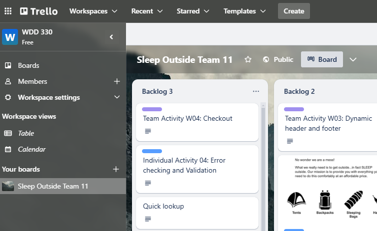
Apenas um membro da sua equipe precisa concluir as Etapas 1 e 2.
Sua equipe terá um quadro do Trello e um repositório oficiais do projeto.
Não conclua esta atividade até ter se comunicado com pelo menos um membro da sua equipe.
- Faça login na sua conta do Trello.
- Crie um espaço de trabalho chamado "WDD 330" ou algo semelhante.
Ajuda: Capturas de tela
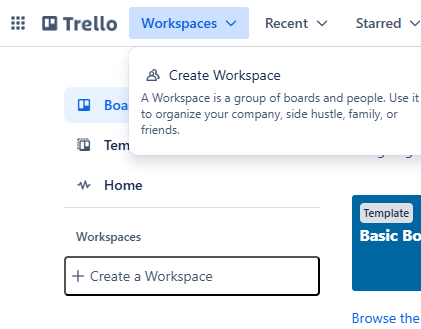
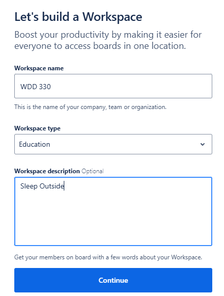
- Copie este quadro do Trello Sleep Outside para a sua conta.
Ajuda: Capturas de tela
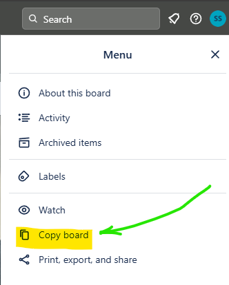
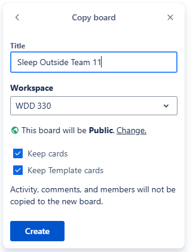
- Convide os outros membros da equipe para o quadro usando os e-mails das contas do Trello deles.
Lembre-se de continuar adicionando membros à medida que eles se juntarem à equipe.
Ajuda: Capturas de tela
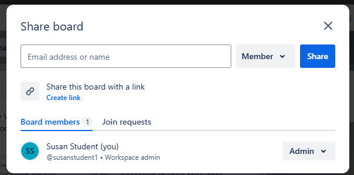
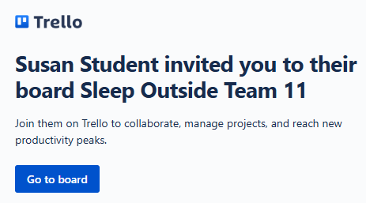
- Defina o quadro como Público, se necessário.
Ajuda: Captura de tela
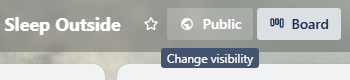
- No trello.com, adicione cada membro da equipe à
Team Activity W01: Setup project for all team memberstarefa.Adicione membros a esta tarefa à medida que eles se juntarem à equipe.
- Mova a tarefa para a coluna
Doing. Esta é a tarefa associada a esta atividade em equipe.
Link: ▶️ Operações Básicas do Quadro do Trello – [ 3:43 minutos ]
Configuração do Projeto – Clonar Repositório
- Faça login no GitHub e clone este modelo de repositório do Sleep Outside clicando no botão "Use this template" para criar uma cópia do projeto em um novo repositório e dar um nome ao novo repositório.
- Acesse o repositório clonado
Settings > Manage Accesse adicione o restante dos membros da equipe como colaboradores.
Clonar e Compilar o Projeto
- Todos os outros membros da equipe precisam clonar este repositório da equipe para seus próprios computadores.
- No VS Code, abra o diretório que contém o repositório clonado.
- Abra uma janela do terminal e mude para o diretório do projeto.
Abra o terminal no VS Code pressionando
ctrl+~para alternar o painel do terminal entre aberto e fechado.No VS Code, você pode usar o painel do terminal (
ctrl+~alterna o painel do terminal entre aberto e fechado). Quando você abre o terminal no VS Code, ele será definido automaticamente para a raiz do seu projeto. - Execute o comando de listagem da interface de linha de comando (
ls) ou diretório (dir) para listar todo o conteúdo do diretório/pasta atual. Certifique-se de ver o package.json na lista de arquivos. Mude para o diretório correto do projeto clonado se não vir esse arquivo. - Execute a rotina de instalação do gerenciador de pacotes do node usando o terminal.
>npm install 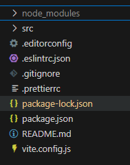
Observe que um novo diretório foi criado:node_modules- Este projeto vem com várias ferramentas integradas para ajudar a equipe a escrever um código consistente e sem erros.
Abra o arquivo package.json. Há duas seções para analisar inicialmente,devDependenciesescripts.devDependenciescontém todas as ferramentas necessárias para o desenvolvimento deste projeto. A execução donpm installconsultou esta lista para saber o que instalar.scriptssão atalhos para comandos de gerenciamento do projeto. Ele contém o seguinte"scripts": { "start": "vite", "build": "vite build --emptyOutDir", "lint": "eslint *.js src/**/*.js", "format": "prettier --ignore-path ./.gitignore --write \"./**/*.{html,json,js,ts,css}\"", "test": "jest" },- start: Isso executará o servidor de desenvolvimento. Você usará isso com mais frequência.
- build: Isso preparará o código para ser implantado em produção. Uma pessoa da sua equipe deve ser designada para executar isso conforme necessário.
- lint: Isso executará o ESLint no código para procurar erros de estilo e sintaxe. Você deve fazer isso toda vez que estiver pronto para fazer o commit. Certifique-se de corrigir quaisquer erros encontrados antes de fazer o commit!
- format: Isso executará o Prettier no seu código e o formatará de maneira consistente. Você também deve fazer isso como uma etapa do seu processo de commit.
- test: Isso executará o framework de testes Jest no seu código.
Os comandos são executados no terminal. Se você quisesse iniciar o servidor de desenvolvimento, por exemplo, digitaria
npm run startno terminal. Se quisesse executar o linter, digitarianpm run lint.
- Tente executar o linter agora.
O que você viu? Abra o arquivo>npm run lint.eslintrc.json. Você pode ter notado que um dos erros relatados é que suas aspas deveriam ser todas simples.As aspas precisam ser aspas simples? Isso importa? Na verdade, não importa se você usa aspas simples ou duplas em seu código JavaScript. No entanto, é importante ser consistente. Sua equipe precisará concordar com um padrão e segui-lo. É por isso que o linter é usado para impor um padrão. Ele ajudará você a evitar erros e tornará seu código mais legível.
- Decidam em equipe se gostariam de usar aspas simples ou duplas. Em seguida, encontre a linha parecida com esta:
"quotes":["error", "single"]no arquivo .eslintrc.json. Se você quiser aspas simples, não faça alterações. Se quiser aspas duplas, mude a palavra"single"para"double".O arquivo
eslintrc.jsonpertence à equipe. Se a sua equipe discordar de alguma das regras que estão sendo impostas, altere-as. Apenas certifique-se de que todos os membros da equipe concordem com as alterações. Se você decidir se aprofundar na configuração de regras personalizadas do ESLint, pode ser útil obter a extensão LintLens para o VSCode. - Execute o seguinte comando:
Em seguida, execute o linter novamente. O que aconteceu? Peça a alguém para corrigir quaisquer erros restantes e, em seguida, faça o commit e envie as alterações.>npm run formatCada membro da equipe deve executar os comandos format e lint antes de fazer o commit após realizar qualquer alteração ao longo do curso.
- Execute o seguinte comando:
Isso executa vários processos no código e inicia um servidor web em>npm run startlocalhost:xxxxondexxxxé o número de alguma porta. Ele também deve abrir esse endereço no seu navegador padrão; se isso não acontecer, você pode digitar esse endereço diretamente no navegador ou clicar no link no terminal.Você deve usar este servidor ao desenvolver seu projeto em vez de algo como o Live/Five Server.
- Quando terminar de trabalhar, você pode parar o servidor dev digitando
ctrl cna mesma janela do terminal em que o processo está em execução. Isso o encerrará.
Publicação
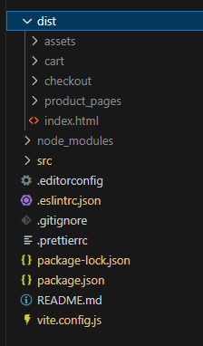
- Gere a compilação de distribuição usando o seguinte comando:
Isso criará um diretório chamado dist.npm run build - Apenas uma pessoa precisará fazer o commit dessas alterações e enviá-las para o GitHub.
- Veja o repositório em github.com e observe que o dist diretório não foi transferido com o commit. Se você verificar o .gitignore arquivo que faz parte do projeto, você verá o porquê.
- Você usará uma plataforma chamada Render para hospedar o site da aplicação web em execução.
✔ Crie uma conta gratuita no Render usando suas credenciais do GitHub e faça login para a próxima etapa. - Após fazer login, você precisa adicionar um novo Site Estático. Clique no botão "+ New" na parte superior e selecione GitHub.
- Selecione o repositório que contém o sleepoutside projeto.
- Selecione a branch "main" e confirme estas configurações antes de implantar:
- Comando de Compilação:
npm install && npm run build - Diretório de Publicação:
dist
Este é o link para o seu site de "produção".✔ A versão de compilação do site será considerada a versão de produção. Este site de aplicativo deve sempre estar funcionando. O Render atualizará seu site toda vez que detectar uma alteração na branch "main" do GitHub. Portanto, após os pull requests serem revisados e mesclados, você provavelmente deve acessar a URL do Render para garantir que nada tenha quebrado.
- Comando de Compilação:
Conflitos de Mesclagem
- Puxe as alterações do GitHub.
- Se ele ainda não existir, crie um arquivo na raiz do projeto chamado
team.txt. - Certifique-se de que haja um link para o quadro do Trello da equipe no arquivo de texto.
- Adicione o seu nome ao arquivo de texto.
- Em seguida, faça o commit dessa alteração e envie -a para o GitHub.
- O que aconteceu? Isso deveria ter resultado em um erro no Git se mais de uma pessoa tiver editado, feito commit e enviado o arquivo.
Foram feitas várias alterações no mesmo arquivo e o Git não sabe qual delas manter. Isso resulta em um conflito de mesclagem. Como os conflitos podem ser evitados? De algumas maneiras:
- Primeiro, certifique-se de que, sempre que se sentar para trabalhar no projeto, você faça um pull antes de fazer qualquer outra coisa para garantir que obtenha as alterações que qualquer um dos seus companheiros de equipe tenha feito recentemente.
- Faça commits com frequência! Commits pequenos têm menos probabilidade de resultar em conflitos do que os grandes... e são muito mais fáceis de corrigir se ocorrer um conflito.
- Aproveite as técnicas de design de software como módulos para dividir seu código em partes menores.
- Por fim, aproveite a capacidade do Git de criar branches. O uso de branches é introduzido no desafio adicional desta atividade abaixo.
- Antes de poder fazer o commit, o conflito de mesclagem precisará ser resolvido. Certifique-se de que o arquivo team.txt esteja aberto. Você deve ver algumas adições ao arquivo feitas pelo Git. Deve se parecer com algo como abaixo.
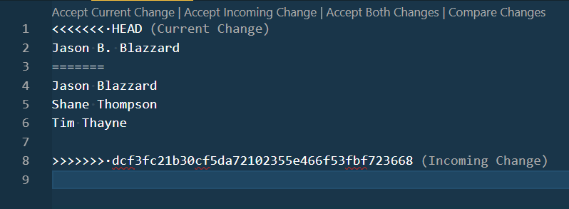
Você deve decidir qual código deve ser mantido.
- O conteúdo do código sob o
<<<<<<<•HEADé o código que você estava tentando enviar. - O conteúdo do código sob o
=======é o código que já estava no GitHub. - Se quiser manter o código que acabou de escrever e descartar o outro, escolha "Accept Current Change".
- Se quiser manter o que estava no GitHub e remover suas alterações recentes, escolha "Accept Incoming Changes".
- Ou, se você escolher "Aceitar Ambas as Alterações", isso irá mesclar ambos os conjuntos de alterações. Esta é frequentemente a maneira mais rápida de se livrar do conflito, mas geralmente exige mais trabalho para realmente corrigir o problema.
- Neste caso, aceite ambas e, em seguida, exclua o nome sem a inicial. Isso nos deixaria com as versões mais atuais de tudo.
- O conteúdo do código sob o
- Assim que corrigir o código, você precisará fazer o commit da mesclagem.
- Envie suas alterações para o GitHub.
Esta foi uma mesclagem simples, pois foi fácil ver o que precisava ficar. Imagine se o arquivo tivesse 200 a 300 linhas de extensão e dois membros da equipe tivessem feito edições em 10 a 15 linhas de código espalhadas pelo arquivo e causado um conflito de mesclagem. Teria sido muito mais difícil descobrir o que manter. A lição é manter seus commits pequenos.
Desafio Adicional
Uma das funcionalidades mais poderosas do Git é a capacidade de criar branches do código. A criação de branches faz uma cópia do código do projeto no momento atual em que as alterações são feitas, sem afetar qualquer outra branch. Isso permite que uma organização mantenha sempre uma versão de produção totalmente funcional do código da aplicação que pode ser implantada a qualquer momento, enquanto também trabalha em atualizações que normalmente causariam uma interrupção no serviço da aplicação.
Você também pode usar branches para reduzir conflitos de mesclagem se vários membros da equipe precisarem fazer alterações no mesmo arquivo em uma base de código.
Instruções de Prática de Branching
- Crie uma nova branch. Dê à sua branch um nome como
yourinitials--branch-test. - Adicione um arquivo na raiz do projeto chamado seunome.txt.
- Digite seu nome no arquivo de texto e salve-o.
- Faça o commit e publique (envie) sua branch para o GitHub.
- Conclua um pull request depois que todos os outros membros da equipe tiverem enviado suas próprias branches.
- Alterne para uma das novas branches no repositório. Observe o que acontece com a lista de arquivos no seu editor quando você faz isso.
- Volte para a sua própria branch.
- Volte para a branch main.
- Discuta com sua equipe o que você viu.
Ao longo do semestre, você estará corrigindo bugs e adicionando funcionalidades ao projeto
SleepOutside. Quando você atribuir uma tarefa a si mesmo, crie uma nova branch para conter o trabalho que irá
fazer. Dê à branch o nome initials--feature-name. Em seguida, quando tiver concluído seu
trabalho e estiver confiante de que tudo está funcionando, envie um pull request.
Pull Requests
Quando você terminar a funcionalidade para a qual criou uma branch, o novo código deve ser mesclado de volta na branch main. Isso pode ser feito de duas maneiras:
- mesclando diretamente a branch de trabalho de volta na branch main, ou
- executar um pull request.
Em projetos onde há apenas um desenvolvedor, mesclar diretamente funciona. No entanto, ao trabalhar com uma equipe, é mais comum trabalhar por meio de pull requests. Um pull request significa essencialmente "Meu trabalho está concluído e testado, estou pronto para que o código seja mesclado com a branch main. Alguém pode verificar e garantir que não vê nenhum problema? (Para eu não quebrar nada 😁)"
Neste caso, no momento, as branches não contêm nada importante que precise ser mesclado de volta na branch main. Portanto, a maioria delas pode ser simplesmente excluída.
- Peça a uma pessoa da equipe, que não seja o piloto (driver), que envie um pull request para sua própria branch para observar como é o processo.
- Após a criação do pull request, o piloto deve ir ao repositório no GitHub, revisar a requisição e, em seguida, finalizar a mesclagem.
- Certifique-se de que todas as branches extras sejam excluídas assim que a mesclagem for concluída.
- Mova o cartão Team Activity S01 no Trello para "Done".
Exemplo de Solução
Não há soluções do instrutor para esta atividade.
Envio
Retorne ao Canvas para relatar o trabalho e as contribuições da sua atividade.